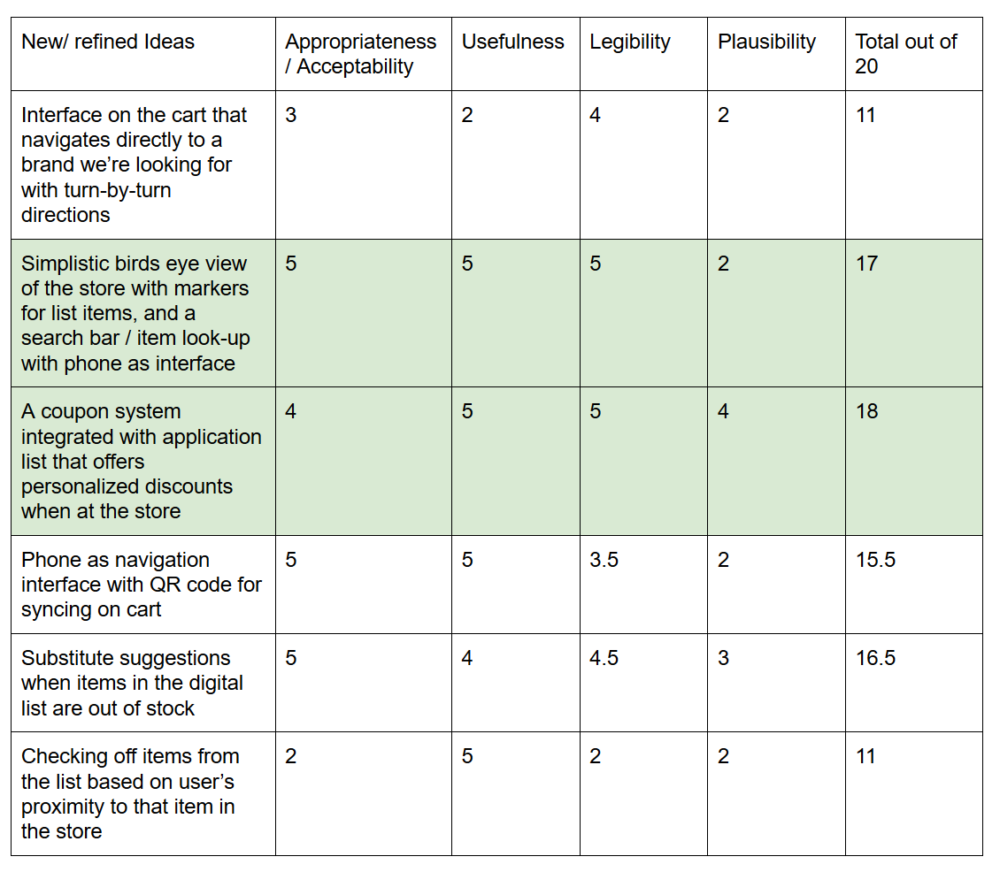

Milestone 3
Experience Prototyping Results & Demo Plans
Introduction
For the previous milestone, we conducted the culture probe and semi-structured follow-up interviews to better understand participants’ experience during shopping. We discovered that participants didn’t bother even though they can’t find something, and also they mentioned that they visited different stores on the same day just because they searched for different items at various stores.
At this point, our group is excited about these new discovers, bringing us specific points to develop. We brainstormed to come up with new design concepts and created plenty of criteria to evaluate. We certainly made sure that our target audience is still younger shoppers and focused our design on integrating with a cart. Still, there have some new questions that need to explore. How acceptable will users find a technology that relies on their shopping list? How comfortable will users sync their device with a cart? Which navigation method: proximity and the following list, is more acceptable?
Along with these questions, further research and experimentation are needed to find an answer. In the next step, we will use user enactments to better understand users’ behavior and attitudes towards experiences that our designs would provide them with, and discover the pain point user faced with our design.
Study Design
Before starting to conduct our user enactments, we were interested in learning about the following research questions, which would definitely help us understand participant’s behaviors and attitudes and better design and experiment with user enactments:
- Do users prefer Phone vs. the cart’s interface?
- Do we need to support a physical list alongside a digital list?
- Sync the device with cart: OR on the cart or the Phone?
- Substitute suggestion: do users find this useful?
- How might in-store list additions work?
- Would users prefer item by item navigation or a bird’s eye view to know the location of items?
Associated with these research questions mentioned above, our group first created a speed dating matrix to generate three main dimensions, which focused around the beginning (set-up), routine (weekly use before shopping), and deviation ( changes from norm routing) of our activities: signing into the cart, navigating the store with the cart and creating a digital list. Then, for better answering our research questions and shedding light on potential design opportunities, we chose five scenarios to simulate: creating a digital list before shopping; syncing a device with the cart when beginning to shopping and navigating in-store with the cart during shopping.
User Enactment 1: Creating a List
Before you go shopping, you must import your entire grocery list. You’re planning to go to Meijer and you know that they use the smart cart system, so you open the application and navigate to list creation. Using your phone please add the following items to your list: Bananas, Granola Bars and Lettuce. (Please let us know when you’re finished.)
User Enactment 2: QR Code
You’ve just arrived at Meijer, and you know they just received the new SmartCarts Meijer recently deployed around Michigan. You see that they’re using QR codes to log in. Would you expect the cart to scan a QR code on your phone, or take a photo with your phone of the cart’s QR code? (hand them the proper prototype. Okay. Please do that now.)
User Enactment 3: Navigation by Item
When you look at the screen of SmartCarts, it shows the list of items that you are going to buy. Find the granola bar.
User Enactment 4: Navigation by Proximity
After you logged into your account, the shopping cart has synced with your list. The screen shows the list that you are planning to buy, and the shopping cart starts navigating each item automatically one by one based on the location of yourself from nearest to farthest. When you pick up the first item, the screen checks this item and begins the next navigation. Please look for the item closest to you.
User Enactment 5: List Additions
You realized you forgot to add your favorite hot sauce to your list, and want to search for where it is in the store now.
After finishing user enactments, our group designed follow-up interview questions about participants’ behavior and thoughts of these activities, and their personal view of creating a list, navigation preference and choice of scan QR code.
Our group recruited five (5) participants to carry out these user enactments.
Study Results
To analyze the results of user enactments, our group shared the notes, photos, insights we gathered from the activities and follow-up interviews we conducted individually. These participants shared their feeling and experience of taking each scenario.
Scenario 1:
- The Category list organization would be better.
- Coupons should be involved and integrating discounts.
Scenario 2:
- Prefer to scan QR code on the cart because it’s easier to do.
- What happens if users forget to log out from the cart?
Scenarios 3:
- Wants to see all items on the cart in the beginning and not every item around.
- It might help if there is voice input.
- User control is essential in navigating.
Scenario 4:
- Using proximity navigation might lead users to end up in the back of the store, not near the check-out.
- Navigation of all items is not necessary.
Scenario 5:
- Showing brand and price is useful when adding addition in-store.
 Scenario 2: the participant chose to scan the QR code on the cart.
Scenario 3 & 4: The participant used navigation to grab his items.
Scenario 5: the participant added their favorite hot sauce in-store.
Scenario 2: the participant chose to scan the QR code on the cart.
Scenario 3 & 4: The participant used navigation to grab his items.
Scenario 5: the participant added their favorite hot sauce in-store.
After talking through different and similarity of gathered data, we started to use sticky notes to create an affinity wall to organize and keep track of each point. We found several key insights, some are shed light on our research questions and some give us a new design direction.
All points and ideas from user enactments and interview questions. Grouping our findings together into themes to analyze study results and generate new ideas.Six (6) key results:
- Users would prefer to use their phone as the interface on the cart - this is beneficial for germaphobes, users who don’t want to use an obtrusively large interface while shopping as well as providing a certain comfort level with incorporating an existing technology belonging to the user.
- Users want to maintain a higher level of control over their path through a store than we had imagined. Most people pushed back on receiving directions from the device without asking first. Many people asked for waypoints on a map to let them find things themselves, rather than wanting a device that tells them where to go at all times.
- When designed user enactment, we originally struggled with thinking about if the QR code should be on the phone ( scanned by the cart) OR if the QR code should live on the cart ( scanned by the user’s phone). Based on feedback from participants, they prefer scanned by their phones.
- Users liked the idea of discount notifications based on the item types on their list ( EX: Greek Yogurt is on user’s list - Notification would show for Chobani sale this week.)
- Users would like to get substitute suggestions when items they usually buy are out of stock.
- Users would like their lists sorted for them. However, sorting items “nearest to furthest” might not be the quickest path through the store, and more importantly, we realized might cause people to find their final item at the back corner of the store, far away from the checkout area.
Ideation and Selection
After completing our analysis our team used the insights we gathered from the user enactments and iteratively applied them to previous and new designs to generate new ideas.
Next, we identified a set of criteria to evaluate our new set of design ideas.
- Appropriateness/Acceptability
- Usefulness
- Legibility
- Plausibility
Finally, we gave each design a score out of five for how well it met each criteria, and we generated a matrix to help evaluate the designs with one another.
Using this matrix as a starting point we discussed how to integrate the best ideas into one design. The full details of the final design are below in the “System Proposal” section, but we did have to discuss several trade offs before we decided on it.
Trade Offs
Navigation and List Sorting
We saw that many users thought that getting directions to items might be interesting or useful, but we learned that users want to remain in control of their path more than we thought. Sorting users’ lists combined with a birds-eye-view of the store seemed more valuable than getting directions to every list item.
Given this, we discussed what the best sorting order for lists would be. Simply sorting nearest to farthest like some users suggested is not guaranteed to be the most optimal route through the store. We realized our list sorting should align with the findings from Milestone 2, where we saw many shoppers traversing the store around its outside edges, so that we can give a helpful route.
Brainstorming on how to sort user lists Example to show the problem caused by simply sorting items nearest to farthest. That algorithm can lead to an inefficient and annoying shopping experience.Coupon System
Many users mentioned they would like, or expect, store coupons to be integrated into a system like this. One on hand, this is a positive aspect, because it’s an incentive for new users to use the system that they would quickly understand. On the other, we need to consider how to present coupons to users without users feeling like they are being bombarded with ads for their whole shopping trip. For now, our team decided to identify coupons with different marks on the user’s map so they can see the details of the coupon only if they’re interested.
System Proposal
We’re proposing an interconnected system of QR codes, Bluetooth beacons, and a smartphone app. We believe all the necessary technology to create this system already exists.
Bluetooth beacons throughout the grocery store can work together with a beacon on a grocery cart to communicate to users where they and everything on their list is in the store. It can all be displayed for them on their smartphone.
Users will have two main views: their list and the birds-eye-view of the store.


The list will be sorted in such a way as to help users navigate quickly from the entrance of the store to the checkout lines. This sorting method will closely follow the general flow shoppers already take through a particular store. Users will be able to check list items off themselves.
The birds-eye-view will show a map of the store with the user’s location as well as the location of all the items on their list. Navigating to the items will be up to the user, but they will also have the option to tap an item on their list or marker on the map for directions to it. This is also where coupons will be integrated, and users can see which of their list items are on sale that day.
Demo Proposal
Our demo will consist of a combination of physical prototypes and an interactive smartphone application prototype. ### Smartphone app #### Demo Components
- Screen to show a user’s shopping list
- Screen to show a birds-eye-view of the grocery store with item locations clearly marked
Construction Materials
- Smartphone, provided by user or our team
- Interactive prototype
SmartCart
Demo Components
- A mock grocery cart with a handle
- QR code placed on its handle
- LED light to indicate connectivity
- Cradle for holding the user’s smartphone
Construction Materials
- Adafruit microcontroller
- LED light
- Materials for microcontroller housing
Grocery aisles
Demo Components
- Foam board shelves placed on tables to hold items for users to find
Construction Materials
- Foam board
- Tape/adhesives as necessary
- Three grocery items
Our demo will include the following steps:
- User approaches the cart and scans the QR code
- LED light on the cart changes to ___ to alert the user they’ve connected successfully
- Our invision prototype loads onto the user’s phone
- User can use the map on their phone to navigate the Smartcart and themselves to items placed in the aisles
At a high level our demo will simulate a short shopping trip a user would go on when using the SmartCart. They will approach the cart, scan its code to sync their device, and go search for a few items.
We plan on using the Wizard of Oz method to help support our demo. This is because of the limits imposed by building our smartphone interface prototype with Invision. By using Invision we can bring a high-quality experience to the users in our demo with regard to the smartphone interface, but we lose the ability to directly relate actions the user takes in the physical world to how the interface behaves. Therefore, we will have to use Wizard of Oz to manage changing the SmartCart’s LED light and what the user sees in the smartphone app.
Overall, we believe that by simulating much of the Bluetooth technology we can bring a realistic experience to users for the other pieces of the demo.
Conclusion
At this point we have refined our design down to a specific system based on what we learned from our user enactments and previous milestones. We also identified the user’s interaction methods with the system and how it will fit into our audience’s grocery shopping routine. However, there are still details we need to decide on for the next milestone. Details of the mobile application interface still need to be finalized. Additionally, we need to design something to house the Adafruit microcontroller for our demo, as well as implement the mobile application’s interactive prototype.